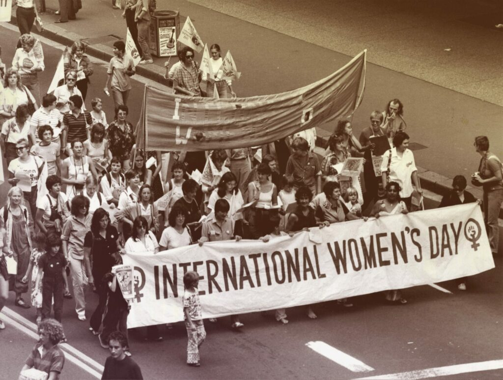
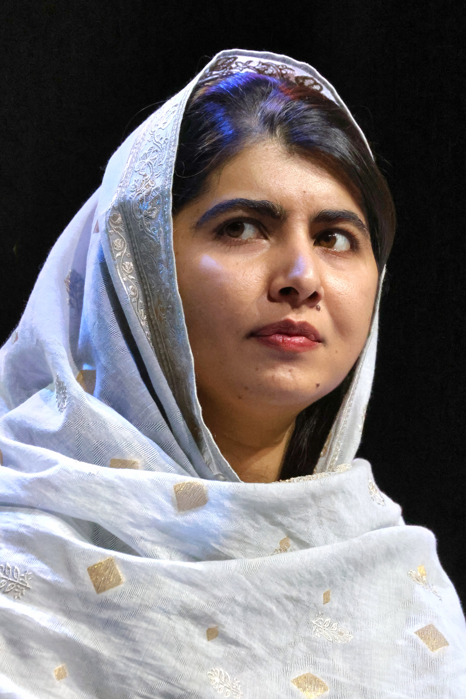
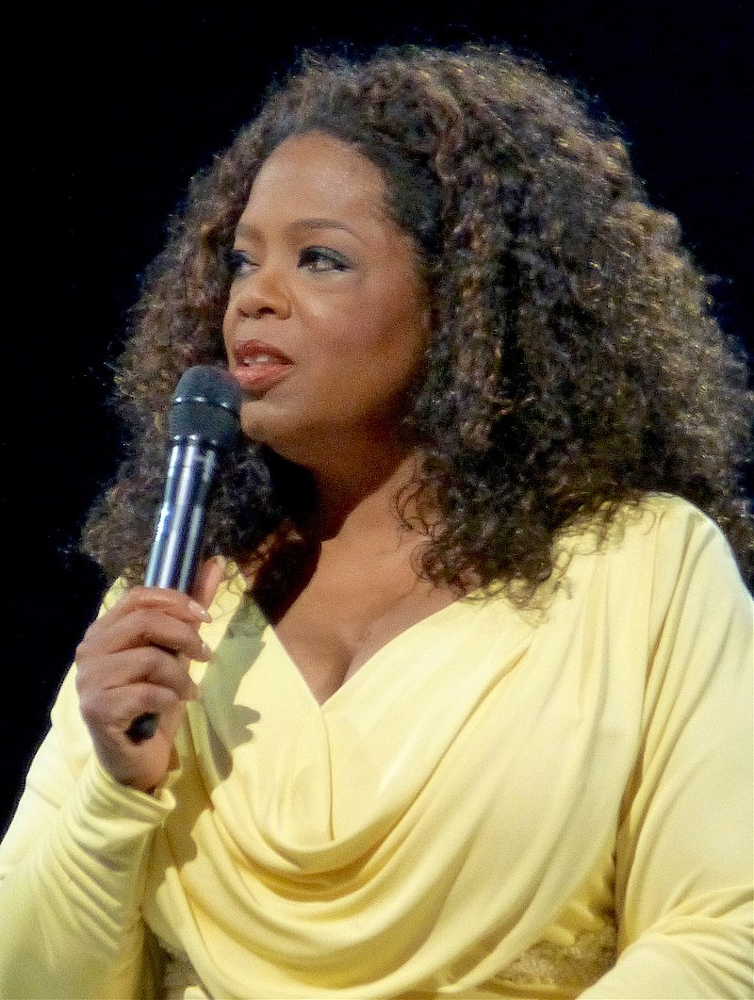

Nguồn gốc và ý nghĩa ngày 8/3
Ngày Quốc tế Phụ nữ 8/3 ra đời từ phong trào đấu tranh của nữ công nhân thế kỷ 19, đòi hỏi quyền lao động công bằng. Đến năm 1910, Hội nghị Phụ nữ Quốc tế tại Đan Mạch đã chọn ngày này làm biểu tượng cho phong trào nữ quyền toàn cầu.
Hoạt động kỷ niệm ngày 8/3 trên thế giới
Mỗi quốc gia có cách kỷ niệm ngày 8/3 riêng biệt:
- Ở Việt Nam, mọi người thường tặng hoa, quà và lời chúc tốt đẹp đến phụ nữ.
- Ở Mỹ và châu Âu, có các buổi tọa đàm về quyền bình đẳng giới, các cuộc tuần hành.
- Tại Nga và Trung Quốc, phụ nữ được nghỉ làm hoặc có nhiều ưu đãi đặc biệt trong ngày này.
Những phụ nữ có tầm ảnh hưởng trên thế giới
Nhiều người phụ nữ đã thay đổi thế giới với những đóng góp lớn lao:
- Marie Curie - Nhà khoa học nữ đầu tiên đạt giải Nobel.
- Malala Yousafzai - Biểu tượng đấu tranh cho quyền được giáo dục của trẻ em gái.
- Oprah Winfrey - Một trong những phụ nữ quyền lực nhất trong ngành truyền thông.

Marie Curie
Malala Yousafzai
Oprah Winfrey